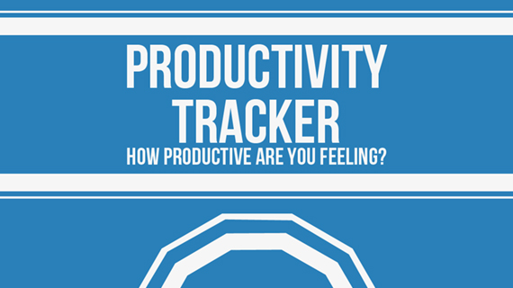

Projects
Productivity Tracker
Alieball

Hi! I'm Rebecca Ansems, I'm currently a Software Engineer at Twitter working on iOS related projects in Boulder, Colorado. I completed my Bachelor of Computer Science degree at Dalhousie University in Halifax, Nova Scotia in 2018.
I got my start programming through making impossibly difficult platformers in Game Maker in my early pre-teens, and competing in LEGO Mindstorms competitions. Currently I'm learning how to code in Java & C through various university classes, and C# & C++ in my free time.
◦ Professional knowledge of Swift, Java and C#.
◦ Professional experience working with Unity 5, Android, and iOS.
◦ Academic knowledge of HTML, CSS, Python, C++, and C.
◦ Proficient in Adobe CS5 Photoshop and Premiere Pro.
◦ Professional experience using version controls software Git and Perforce.
◦ Completed courses related to databases, algorithms, and witchcraft.
◦ Leadership, planning, and public speaking skills gained from Dalhousie’s Women in Technology Society (WiTS) as president and Dalhousie’s Computer Science Society as vice president internal.
◦ Self-motivation and problem solving skills gained from the full creation and release of my own one-person studio games and applications for Windows, iOS, and Android systems.

Six-Twelve-Six is an easy way to view blood sugar trends, a predicted A1C value, and extensive catalog of food with carb values.
FOAMfilter allows medical professionals to filter tweets using #FOAMed or regarding the FOAM (Free Open Access Meducation) movement for information relevant to their profession.
Inspired by ancient Greek black figure vases, Corinth is an endless runner set on one of these vases. The vase continuously rotates, revealing new dangers that you will have to avoid.
Settlr is a web app that helps someone who just moved to Nova Scotia to determine what town in NS they should move to based on what is important to the person (eg good schools, parks, etc).